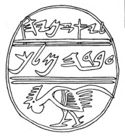

Jaazaniah Seal

- Find Name
- Jaazaniah Seal
- Description
- A small black agate seal, about the size of a thumbnail and pierced like a bead so its owner could wear it and press it into wet clay as a signature, found in a tomb at Tell en-Nasbeh (identified as biblical Mizpah) during the Badè excavations of 1926–1935. In Hebrew letters of the 6th century BCE it reads 'Belonging to Jaazaniah, Officer of the King' (ebed ha-melekh, servant or officer of the king). The fighting cock on the lower part of the seal is one of the oldest representations of the rooster found in Israel/Palestine.
- Historical Period
- Iron Age II
- Evidence Class
- Contextual
- Interpretations
- The seal itself is certain, but its owner is not: it is possible, not proven, that this seal belonged to the army captain Jaazaniah who came to Mizpah after the fall of Jerusalem in 586 BCE (2 Kings 25:23; Jeremiah 40:8), as the museum panel and Walter Kaiser suggest. The name Jaazaniah belonged to several biblical figures, including Jaazaniah son of Shaphan (Ezekiel 8:11), a different man, so the seal must not be assigned to a biblical figure without the 'possible' qualifier. Its value stands regardless: it shows a royally titled official named Jaazaniah operating at Mizpah in exactly the generation of Gedaliah's governorship.
- Alternative Names
- Seal of Yaazanyahu, Servant of the King
- Related Places
- Related Books
- Related Events
- Scripture Illuminated
- Biblical Significance
- It puts a named royal officer at Mizpah in the months after Jerusalem's fall, matching the world of Gedaliah's governorship in 2 Kings 25 and Jeremiah 40.
- Artifact Date
- 6th century BCE
- Current Location
- Badè Museum of Biblical Archaeology, Berkeley, California (Tell en-Nasbeh collection)
- Date Discovered
- 1926–1935
- Discovery Location
- Tell en-Nasbeh (Mizpah)
- Timeline Era
- Exile
Awaiting Review Not yet checked against scholarly sources. Treat its claims as provisional until this entry is reviewed. About verification
Last reviewed: not yet reviewed